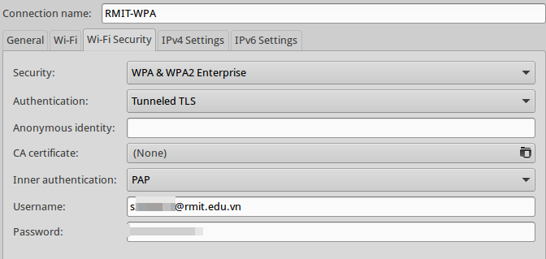

Fix RMIT wi-fi issue in Ubuntu 13.04 and variants
The issue
When I upgraded to Xubuntu 13.04, although I could connect to any other wi-fi network painlessly, the RMIT-WPA network just never allowed me to establish a connection. The most annoying part was that it had been working fine in previous versions (12.04, 12.10).
After days of googling, I finally pinpointed the issue: a certain version of NetworkManager bundled in Ubuntu 13.04 has a bug that automatically turns CA certificate usage to true for any WPA2 wifi network, even if we choose to use none in the GUI.

The solution
Just manually edit /etc/NetworkManager/system-connections/RMIT-WPA, make sure that you have
system-ca-certs=false, then restart the wifi connection. To edit this file you will need root
permission. If you’re not sure how to do this, open a terminal and enter this command to open
gedit with sudo permission (mousepad if you’re using xubuntu):
# Protip: DON'T use sudo for GUI programs! Use gksudo instead.
gksudo gedit /etc/NetworkManager/system-connections/RMIT-WPA
This is a known bug and many have complained about it. There seems to be no developer assigned to fix it though. I’ll keep you updated on the issue.
Update (Dec 16, 2013)
A fix has been released in GNOME upstream but not incorporated into official Ubuntu repositories yet. An impatient contributor has created his own PPA to provide the fixed package. To install it, enter the following commands:
sudo sudo add-apt-repository ppa:pritambaral/nms
sudo apt-get update
sudo apt-get install network-manager-gnome